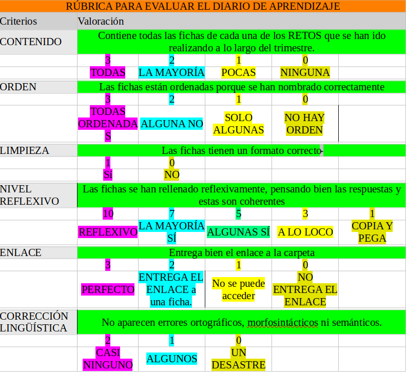

Producto Final y Evaluación
Comprueba que has realizado todas las tareas.
Tu profe comprobará que:
1. Has realizado y compartido los 10 retos de iniciación a Scratch.
2. Has creado tu presentación en Scratch y la has compartido correctamente.
3. Has creado tu videojuego en Scratch y lo has compartido correctamente.
4. Has compartido eficazmente y entregado los enlaces a tu carpeta de Diario de Aprendizaje y en ella se encuentran rellenas reflexivamente las fichas correspondientes a cada reto y con el nombre apropiado.

5. Has disfrutado aprendiendo a programar y has participado actívamente en todas las actividades realizadas en clase aportando tus ideas de forma reflexiva y positiva contribuyendo a crear un buen ambiuente de trabajo y colaboración en clase.
Si has tenido algun problema durante la realización de estas actividades siempre puedes preguntar las dudas al profe o a algún compañero/a.
No obstante, recuerda siempre leer bien las instrucciones de las tareas y comprobar que lo tienes todo antes de entregarlas.